Fütürizm (İtalyanca: Futurismo)
Gelecekçilik.
İtalya'nın müzelerini mezarlıklara benzeten tartışmalı politikacı ve şair Filippo Tommaso Marinetti, diğer Avrupa ülkelerinin aksine İtalya'nın ilerleyememe sebebinin tarihine katı bir şekilde bağlı kalmasından kaynaklandığını savundu. Müzeler-mezarlıklar analojisini yaptığı Fütürizm Manifestosu'nu 20 Şubat 1909'da Birinci Dünya Savaşına yıllar kala İtalya'nın çok okunan gazetelerinden biri olan Figaro'da yayımladı.
“Yeni bir güzellik ilan ediyoruz, hızın güzelliği. Yarışan bir motorlu araba... "Samothrace'nin Zaferi" nden daha güzeldir. "
Fütürizmin sanatsal biçimini tanımlayan, Fransız düşünür Henri Bergson (1859-1941)'dan ve onun "élan vital (hayati momentum)" kavramından etkilenerek "Fütürist Resim: Teknik Manifesto (1910)" yu Fütürizm'in öncülerinden Umberto Boccioni (1882-1916) yazdı ve Luigi Russolo, Carlo Cara, Giacomo Balla ve Gino Severini imzaladı.
Fütüristlerin İtalya'ya ayak bağı olduğunu düşündükleri Yunan ve Roma geleneksel ve rönesanas santına karşı oluşu Boccioni'nin 1912'de yazdığı "Fütürist Heykel: Teknik Manifestosu" nda heykel sanatının yalnızca taş ve bronz malzemeleriyle sınırlı kalmamasını ve "cam, ahşap, karton, demir, beton, at tüyü, deri, bez, ayna, elektrik, ışık gibi çeşitli "malzemeler" kullanılabilmesi olarak türetilmiştir.
{{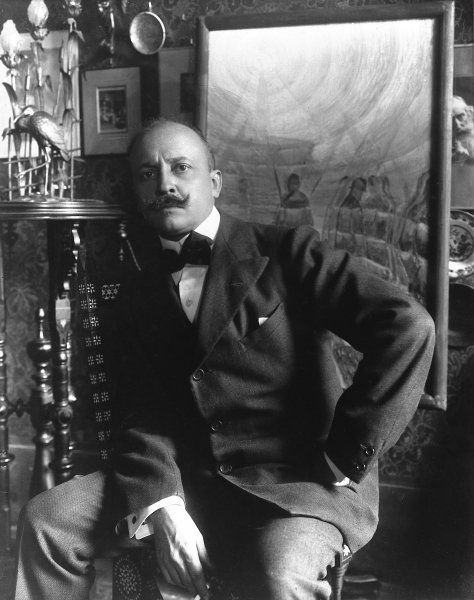}}
F.T. Marinetti (1876-1944). Hukuk okudu fakat şiire ve sanata yöneldi. Avrupa' da düzenlediği kasıtlı sansasyonel konferanslar fütürizme kısa sürede ün kazanmıştır. 1919'da yazılan Faşist Manifesto' nun da ortak yazarıdır. Aslında iki düşünce yapısı arasında net bir bağlantı yoktur fakat "benzer siyasi görüşlerin yol açtığı bir yakınlaşmanın" [3] yaşanmış olduğu söylenebilir.
{{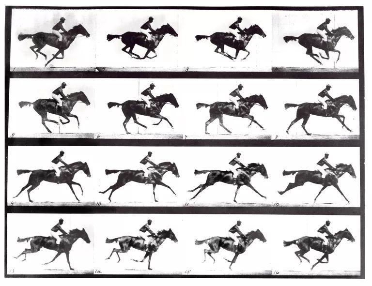}}
Fütüristler dinamik hareketin görünümünü yakalama gayelerine paralel olarak kendilerinden önce yapılan deneysel fotoğraf çalışmalarından etkilenmiştir. Eadweard Muybridge (1830-1904)' in 1878'de yayımladığı "Hareket Halindeki At" fotoğraf dizisi, fotoğraf makinelerinin pozlama süresinin kısalması sayesinde yapılan deneyde, hareket halindeki bir atın dört nala koştuğu herhangi bir anda dört ayağının da havada olduğunun ilk kanıtıdır.
Fütürizmin sanat manifestolarında da antikiteden kopmak temeldir. Fakat yerine konacak olan yeterince açık belirtilmemiştir. Üstelik anti-feminist olan fütüristlerin eserleri manifestolarında olması gerektiğini savundukları kadar "yeni ve farklı" değildir. [1]
"İtalya'da Fütürizm, Birinci Dünya Savaşı'yla birlikte son bulmuştur. Bu sonda savaşın bir tür hijyen olduğunu savunan fütüristlerin bazılarının savaşta ölmesinin etkisi vardır." [2]
"Fütüristler, resim, heykel, seramik, grafik tasarım, endüstriyel tasarım, iç tasarım, kentsel tasarım, tiyatro, film, moda, tekstil, edebiyat, müzik, mimarlık ve hatta Fütürist yemekler dahil olmak üzere sanatın her alanında uygulandı. Bir dereceye kadar Fütürizm, Art Deco, Konstrüktivizm, Sürrealizm, Dada ve daha büyük ölçüde Kesisizm, Rayonizm ve Vortisizm gibi sanat hareketlerini etkiledi." [4]
Fütürizm 20. yüzyılın avant-garde sanatına öncülük etmiştir.
Fütürizm Avrupa dışında da benimsenmiştir.
Rusya'da Kübo-Fütürizm, Rayonizm (1912): Fütüristlerden sonra yaygınlaşan manifesto yayımlayarak seslerini duyurma geleneğini bozmadan doğdu. Fütüristlerin kübizmden feyz alması gibi Rus Fütürizmi de kübizmle birlikte özümsendiği için bu adı almıştır. "Rus halk sanatı ve ikonaları gibi geleneksel kaynakları geometrik ve mekanik görüntüler halinde sunmuştur." [5]
İngiltere'de Vortisizm (1914): Hareket, dinamizm ve makine estetiği ile oluşturulan bu yeni sanat akımı ismini Wyndham Lewis' in önerisiyle İngilizce'de girdap anlamına gelen "vortex" sözcüğünden almıştır.
Birinci Dünya Savaşı öncesinde Marinetti öncülüğünde Avusturya-İtalya sınırındaki Trieste'de düzenlenen "Fütürist Akşamları" Marinetti'nin kasıtlı olarak kaos yaratma biçimlerine rağmen devam etti. Bu düzenlemelerde kışkırtıcı manifestolar okunur, "sentetik tiyatrolar" sergilenir, "gürültü müziği" dinlenirdi. Luigi Russolo 1913 yılında "Gürültü Sanatı" başlıklı bir manifesto yayımlamıştır ve bu "gürültü müziği" günümüz deneysel elektronik müzik janrının öncüsü olarak nitelendirilmiştir. [6] "Fütürist akımın müzikteki temsilcilerine Bruitist’ler (gürültü yapıcılar) denir." [7]
{{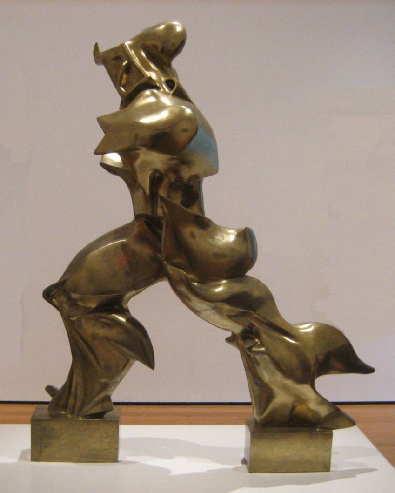}}
Unique Forms of Continuity in Space (Boşlukta İlerleyen Tekil Süreklilik Biçimleri), Umberto Boccioni, 1913.
{{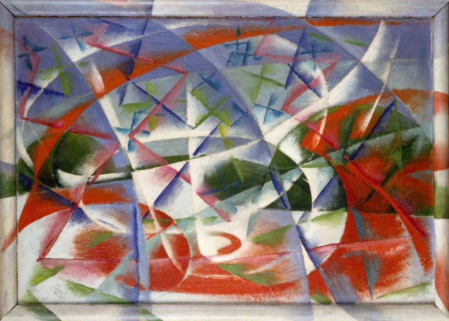}}
Soyut Hız+Ses, Giacomo Balla, 1913-14.
{{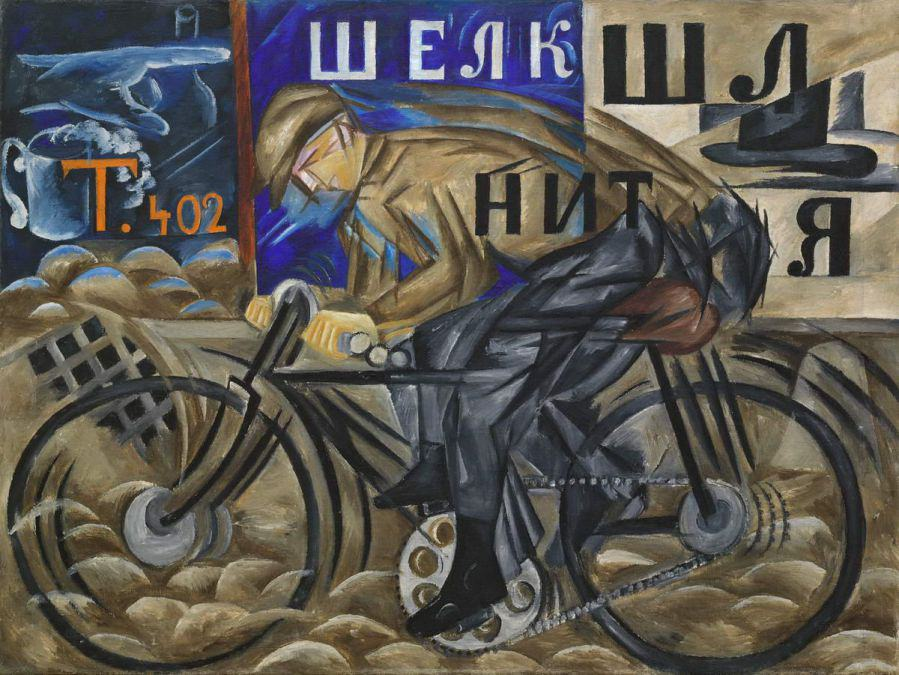}}
Cyclist (Bisikletçi), Natalia Goncharova, 1913.
{{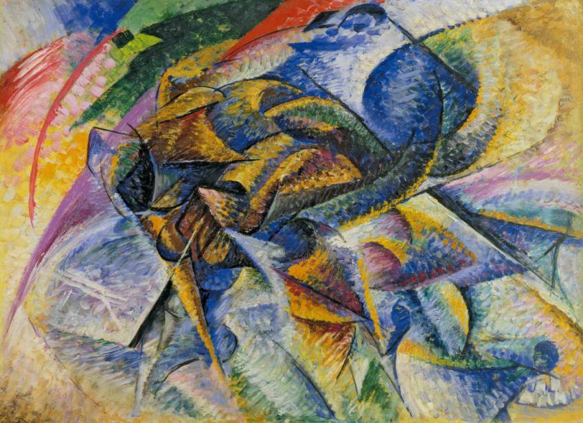}}
Dynamism of a Cyclist (Bisikletçinin Dinamiği - Dinamismo di un ciclista), Umberto Boccioni, 1913. 70 x 95 cm, Gianni Mattioli Collection, Peggy Guggenheim Collection, Venice.
{{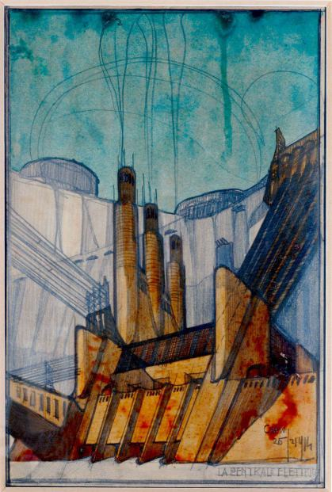}}
La centrale elettrica (The power station - Elektrik İstasyonu), La Città Nuova (Yeni Şehir) Serisi'nden, 1914. Sant'Elia' nın tamamlanmış bir işi bulunmamasına rağmen modern mimariye yön vermiştir. Fütürist mimari Art-Deco ve Neo-Fütürizm gibi akımları tetiklemiştir.
{{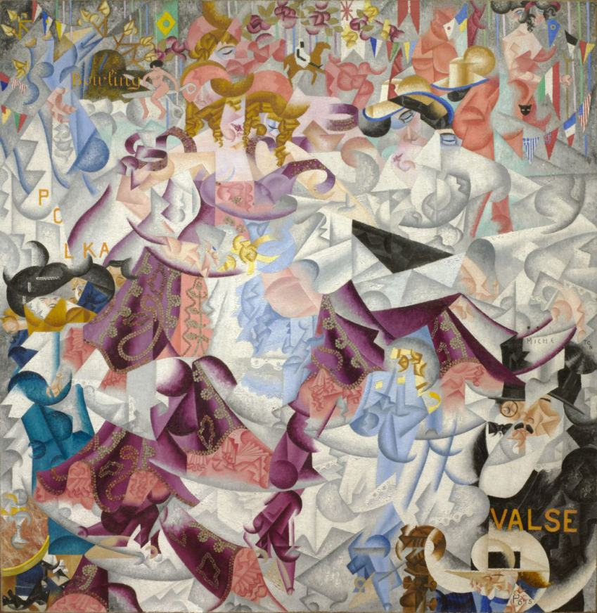}}
Dynamic Hieroglyphic of the Bal Tabarin (Bal Tabarin'in Dinamik Hiyeroglifi), Gino Severini, 1912. 161.6 x 156.2 cm (63.6 x 61.5 in.), Museum of Modern Art, New York.
{{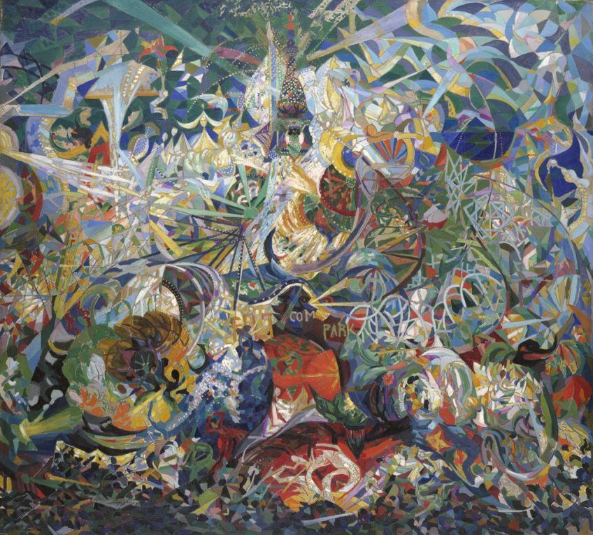}}
Battle of Lights, Coney Island, Mardi Gras (Işıklar Savaşı, Coney Adası, Mardi Gras), Joseph Stella, 1913–14. 195.6 × 215.3 cm, Yale University Art Gallery
{{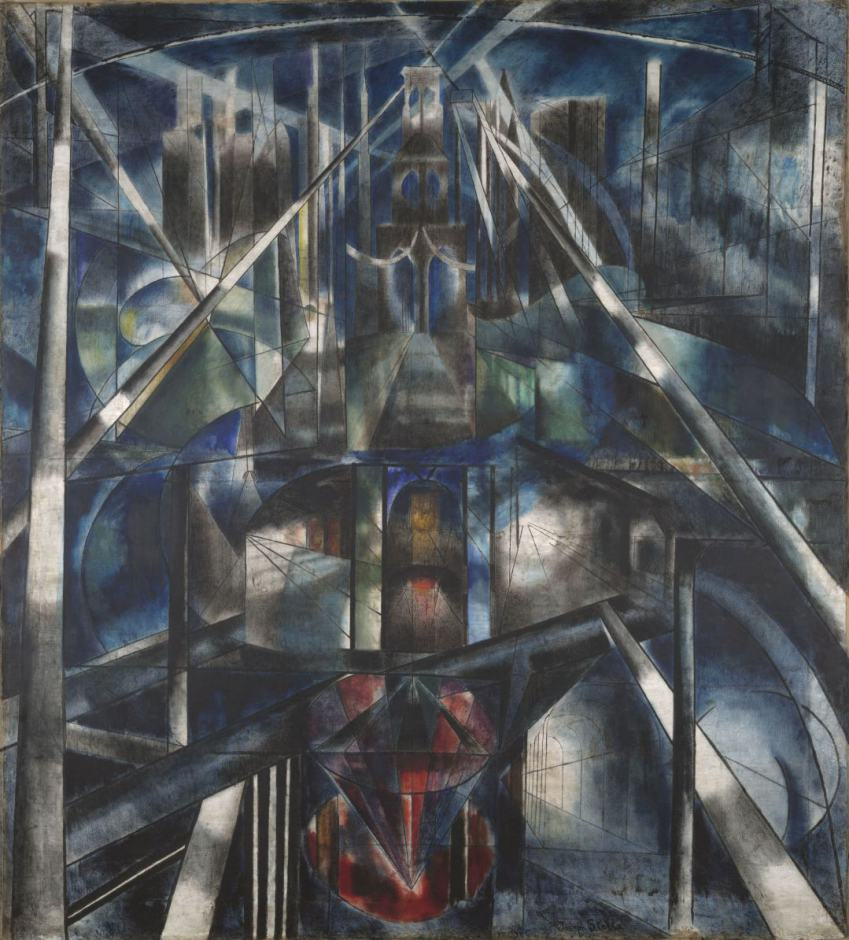}}
Brooklyn Bridge, Joseph Stella, 1919-20. 215.3 x 194.6 cm, Yale University Art Gallery.
{{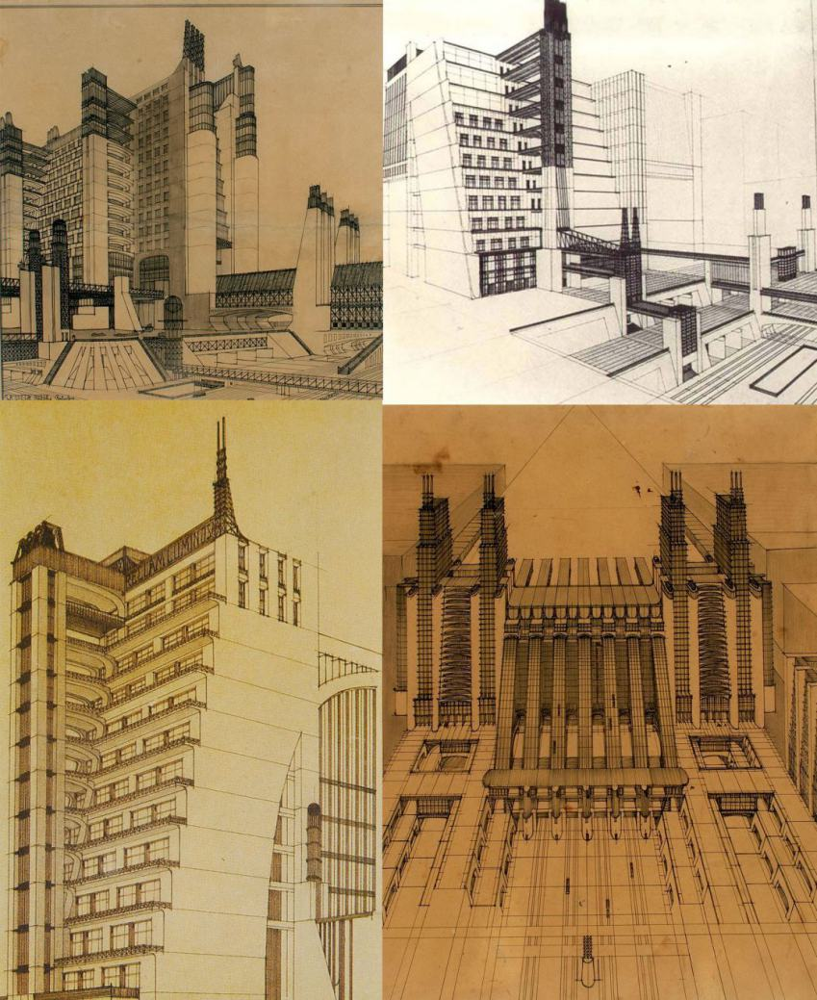}}
Antoni Sant'Elia'nın La Città Nuova (Yeni Şehir) Serisi'nden, 1914.
Birinci Dünya Savaşı'ndan sonra birçok ilk dönem fütüristin savaşta ölmesiyle Antonio Sant'Elia'nın da varlık gösterdiği ve fütürizmi şehir mimarisine dönüştüren ikinci dönem fütürizm gelişti.
“Fütürist şehri, her parçası çevik, hareketli ve dinamik, devasa, hareketli bir tersane modelinde icat etmeli ve yeniden inşa etmeliyiz; fütürist ev bir tür devasa makine haline gelmelidir." Fütürist Mimarlık Manifestosu
İkinci Dünya Savaşı'ndan sonra görece zayıflayan Fütürizm Uzay ve Atom Çağı'nın heyecanı, kişisel araç kullanımının artması ve Sant'Elia'nın savaşta ölmesi doğrultusunda yeniden tanımlandı. Stil olarak değil ama serbest bir mimari yaklaşım olarak benimsenmeye başlaması sonraki nesiller boyu değişime uğramasına sebep oldu. Bu yüzden Sant'Elia fütürizminden ve fütürizmin değerlerinden ayrışır.
Fütürist mimari modern mimari akımlarını da etkilemiştir.
Art-Deco Mimarinin aerodinamik (streamline) formları 1920ler Amerika'sında fütüristik olarak betimlenmiş; Art-Moderne olarak tanımlanmıştır. Art Deco tanımı 1968'den sonra, pahalı materyallerden yapılıp ince işlenmesi, süslenmesi sebebiyle Arts Décoratifs'in kısaltması olarak kullanılmaya başlanmıştır.
Neo-Fütürist/Post Modern Mimari: Neo-Fütürizm yüksek teknoloji endüstrileri binalara entegre etmek gibi bazı Yüksek-Teknolojili Mimari elementlerini barındırıyor. Bu sebeple günümüzde fütürist mimari Yüksek-Teknolojili Mimari ile karıştırılabiliyor. 1960-1980 yılları arasında Fütürist Sant'Elia etkisinde Hal Foster, William Pereira gibi mimarlar öncülüğünde oluşturuluyor. İkinci atağı ise 21.YY'da Zaha Hadid ve Santiago Callatrava'dan esinlenilerek gerçekleşiyor.
Bilim kurgu eserlerinde, çizgi romanlarda fütüristik tanımı ucu açık biçimde uzay çağının görünümünü, mimarisini anlatmak için kulllanılır. Buna benzer şekilde günümüzde fütüristik mimari tanımı blob mimari veya Yüksek-Teknolojili Mimari (strüktürel ekspresyonist mimari) ile karıştırılabiliyor.
{{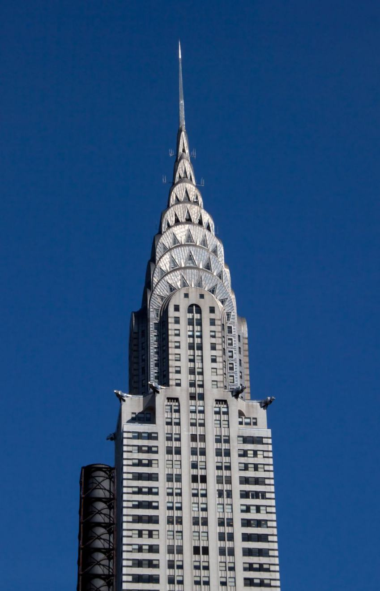}}
Manhattan, New York'taki Chrysler Gökdeleni. Mimar William Van Alen. 1928.
{{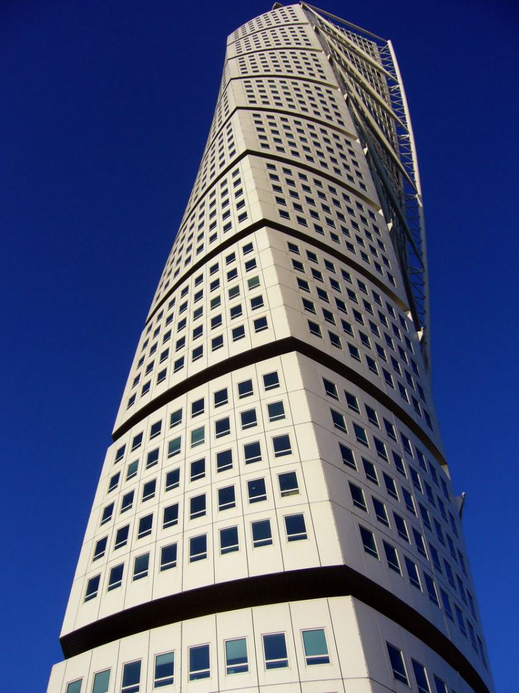}}
Malmö’deki Turning Torso. Mimar Santiago Calatrava, 2005.
Fütürizmin hızlanma ve gelenekselden uzaklaşma eğilimi, edebiyatta kendine düz yazıdan ziyade şiir ve tiyatroda yer bulmuştur. Şiirde daha az cümle kullanımı, "beklenmedik imge kombinasyonları", aşırı keskinlik; tiyatroda birkaç cümlelik sahneler, anlaşılmayan mizah ve geleneksel tiyatro anlayışının parodisini yaparak bu teknikleri alt üst etme girişimleri olarak "sentetik tiyatro" vardır.
Fütürist edebiyat sezgi, analoji, ironi, söz diziminin bozulması, onomatope gibi uygulamalarda bulunur. Onomatope (onomatopoeia) adıyla anılan bir sesin dönüşümüne denir. (Boom, Pow, Zonk...)
{{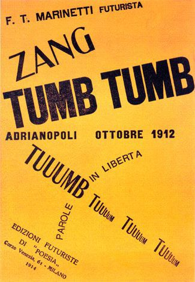}}
"Zang Tumb Tumb, Marinetti'nin hem sözlü hem de görsel bir şiir biçimi olan Parole In Libertà' da (Özgür Sözler) yayınlanan ilk koleksiyonuydu. 1912'de başlayan ve 1914'te yayınlanan eser, Marinetti'nin 1912 Balkan Savaşı sırasında Edirne Kuşatması'nı savaş muhabiri olarak ele aldığı deneyiminin bir anlatımıdır. Zang Tumb Tumb başlığı, mekanize savaşın sesini çağrıştırıyor - topçu bombardımanı, bombalar, patlamalar." -Modern Sanat Müzesi (MoMA - Muesum of Modern Art)
{{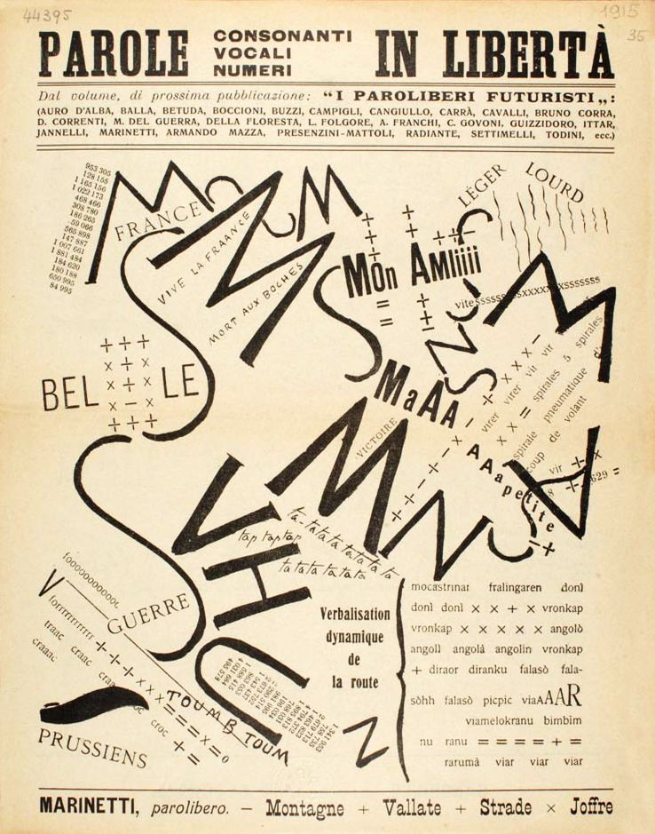}}
"Marne'den sonra Joffre Arabayla Cepheyi Ziyaret Etti (Après la Marne, Joffre visita le front en auto), Marinetti, 1915."
🖌 Fütürist şiirin grafik tasarım tarihi -özellikle tipografi- üzerinde de etkileri olmuştur.
{{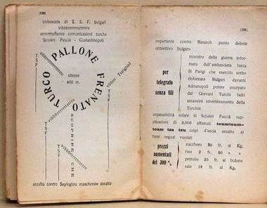}}
"Türk Balonu (Turkish Balloon), Zang Tumb Tuuum'dan bir sayfa, 1914. Bu kopya MOMA'nın koleksiyonundadır."
{{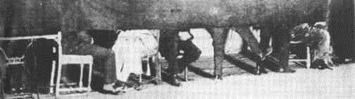}}
"Marinetti'nin sentetik tiyatro eserlerinden biri olan "birçok şehir meydanını, manzarasını, sokakları tek bir odanın sosisine doldurmak" gibi passeist tiyatro geleneklerine bir muhalefet olarak Marinetti'nin "Ayaklar" ı sadece sanatçıların ayaklarından oluşuyordu." Senaryo, "Siyah kenarlı bir perde, bir insanın midesi kadar yükseltilmelidir" diye açıklıyordu. "Halk sadece bacakları hareket halinde görür." Oyuncular, düşük ekstremetlerinin tutum ve hareketlerine en büyük ifadeyi vermeye çalışmak zorundaydı." [8]
{{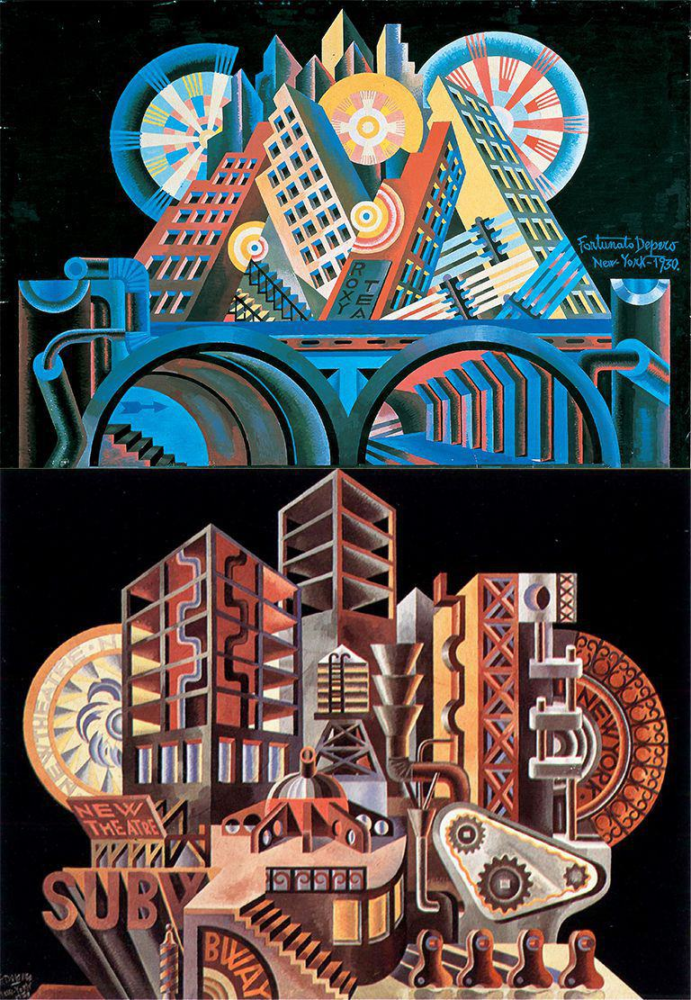}}
{{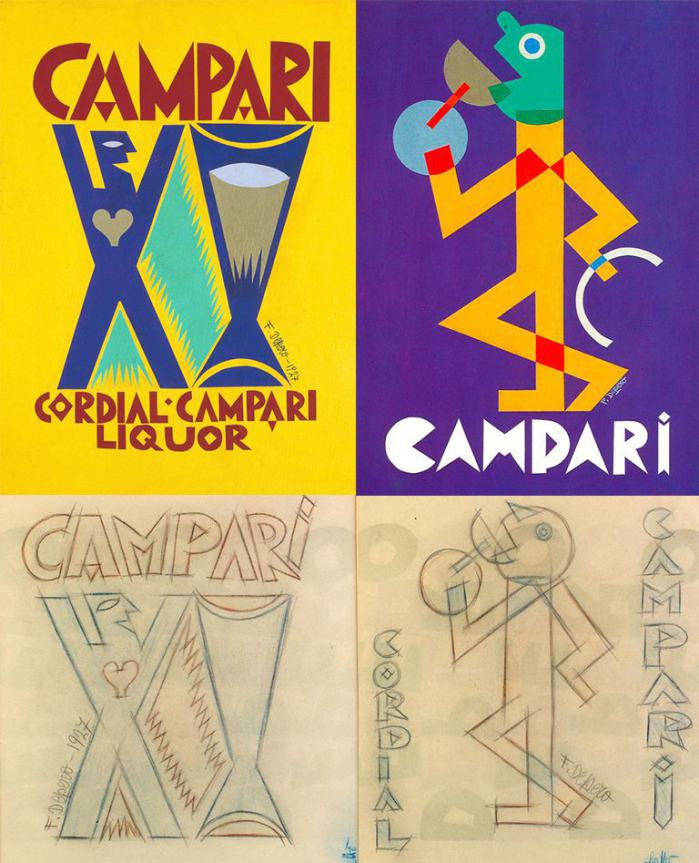}}
İtalyan fütürist ressam, yazar, heykeltıraş, grafik tasarımcı. İtalya'dayken Marinetti ve Balla gibi fütüristlerden etkilenip 1915'te "Evrenin Fütürist Yeniden İnşası" adlı manifestoyu Balla ile yazdı. Sahne ve kostüm tasarımları yaptı. 1915'te Fütürist Sanatın Evi adını verdiği oyuncak, goblen ve mobilya üreten Rovereto'daki bugün müze olan fabrikayı kurdu. Endüstriyel ve dekoratif sanat sergilerine fütürizmi temsilen katıldı. 1927'de fütürist felsefesini uyguladığı dinamik figürlerin olduğu grafik, tipografik, reklam ve goblen yeniliklerine, deneylerine genel bir bakış ve baskı tarihinde bir ilk olan "The Bolted Book (cıvatalı kitap)" olarak da bilinen Depero Futurista kitabını yayımladı. Kendi sitesinden tüm sayfalara ulaşabilirsiniz.
1928'te Amerika'ya gelişiyle kostüm ve iç mimari tasarımlarına devam ederken Vanity Fair, MovieMakers, Sparks, The New Yorker, Vogue dergilerinde kapak tasarımları yaptı. Dadaizm, Konstrüktivzm ve De Stijl akımları onun yenilikçi tekniklerinden, deneylerinden etkilendi. Fütüristler manifesto yayımlama, tipografik deneyler yapma ve tanıtım gösterileri yapma gibi uygulamaların başlangıcı oldu.
🍾 Amerika'dan İtalya'ya döndüğünde 1930-40'ların İtalyan Amerikancılığının tonunun belirlenmesine yardımcı oldu. Campari şişesini tasarlarken "geleceğin işaretleri (i fari dell’avvenire)" olarak tanımladığı (Milan: Campari, 1931) metropolün trafik ışıklarından yola çıktı. Reklam posterlerinde ise bu dinamizmi deneysel uygulamalarıyla betimledi.
{{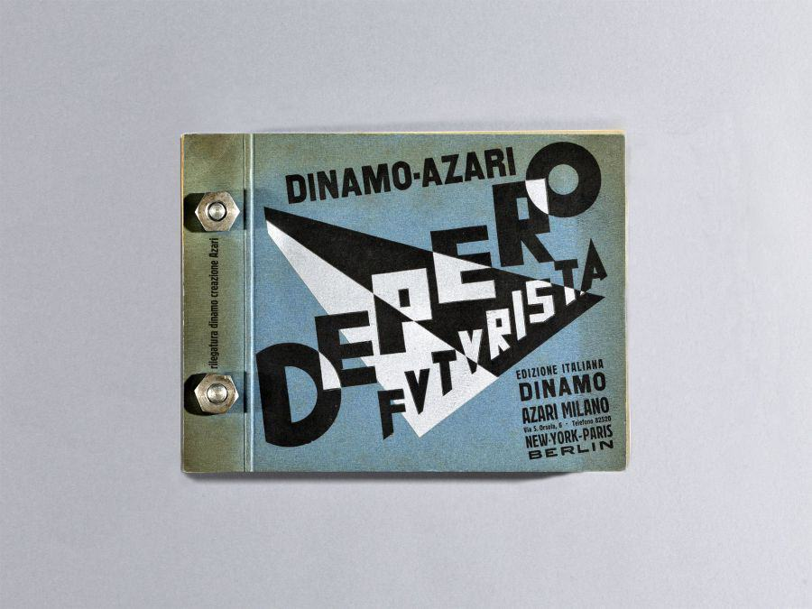}}
Depero Futurista, namıdiğer "The Bolted Book", 1927. https://www.boltedbook.com/
{{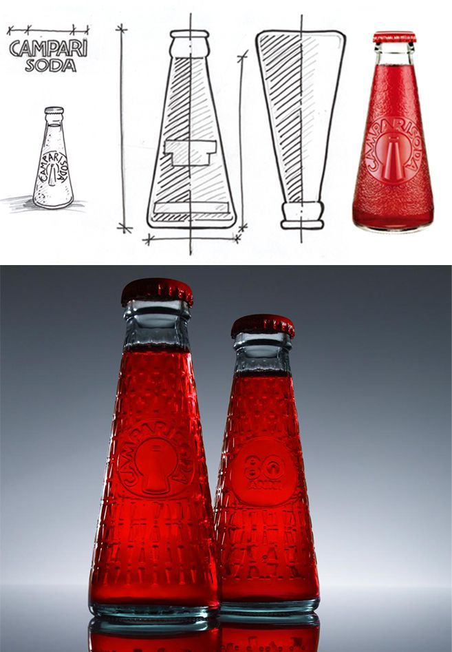}}
Üstte orijinal Fortunato Depero tasarımı Campari Soda şişesi altta markanın 80.yılı için Matteo Ragni tarafından re-design edilmiş Campari Soda şişesi.
Fütürizm sanat-tasarım camiasında uzun ömürlü, yüksek sesli ve iyi yerleşmiş bir tanım olmuştur. Yalnızca bir sanat-tasarım akımı değildir; sosyokültürel bir harekettir. Marinetti'nin "Fütüristik Akşamlar", sergiler, manifestolar ve uyguladığı manipülatif taktikler aracılığıyla kitlelere sesini duyurması ve sanatçıları etkilemesi sonucu fütürizm popülerleşti ve geçmiş yüzyılın romantikliğinden ayrılmak suretiyle sanat ve popüler kültür arasındaki çizgi de biraz daha muğlaklaştı. Her ne kadar Marinetti'nin asıl amacı "İtalyan olmayan ırklara İtalyanların dehasını göstermek" olsa da. 1900'lerin ardı arkası kesilmeyen inovasyonlarının ardından gelişmelerin hızı logaritmik olarak arttı ve her yeni jenerasyon mutlaka devrimsel sayılabilecek bir yenilikle karşılaştı. 1900'lerin başlarındaki yenilikler 1904 yılında traktörün, 1908 yılında Ford T Model'in üretimi gibi mekanik, çok sesli, görece hızlı ve gençti. İnovasyonlar değiştikçe elektronik ve taşınabilir aletler artıp, uzaya gitmek mümkün olunca fütürizmin çağrıştırdıkları da değişti. Bu çağrışımlar 1910-20'lerin fütürizminden farklıdır ve bu değişim 1960'ların Uzay Çağı ve 1970-80'lerdeki hızını alamayan teknolojik gelişmelerle hızlanmıştır. Özellikle Soğuk Savaş döneminde Amerika ve Rusya tarafından propaganda aracı olarak kullanılan "Aya gitme" söylemleri halkın bu tür gelişmelere daha yakından bakmasına sebep olmuştur. Günümüzde kullandığımız fütürizm-fütüristik gibi isimler-sıfatlar bize daha çok uzayı, bilimsel gelişmeleri ve yüksek hızlı işlem kapasitesine sahip olan kuantum işlemcileri gibi yenilikleri çağrıştırır.
Bir sonraki sayıda, kullanılan teknolojiler, inovasyonlar, sunduğu çözüm yolları gibi açılardan yenilikçi, çağının ilerisinde hissettiren/görünen tasarımları yani fütüristik tasarımları inceleyeceğiz. 🖖
1920'lerden bir film önerisi: Metropolis (1927)
Endüstrileşme döneminin çarpıklığını ve dualitesini, işçiyi ve iş sahibini el-akıl-kalp metaforlarıyla anlatıp arabulucu olacak olan ayrıcalıklı gencin kötü şartlarda yaşayan alt katman dünya işçilerini fark etmesiyle olayların içinden çıkılamaz halini romantik bir sonla bitiren Alman yönetmen Fritz Lang'in bilim-kurgu filmi. Orijinal hikaye Theo von Harbou tarafından yazıldı. (1925)
"Eller ve akıl arasındaki arabulucu kalp olmalıdır."
Sizler düşüncelerine katılmadığınız, yaptıklarını onaylamadığınız birinin eserlerine nasıl yaklaşıyorsunuz? Yazıyı okurken sözü geçen kişilerin düşüncelerini aklından çıkaramayanlardan mısınız, yoksa ayrı tutabiliyor musunuz? Yorumlarda tartışabiliriz. ↗
- Alıntılar
[1] ANTMEN, Ahu, Sanatçılardan Yazılar ve Açıklamalarla 20. Yüzyıl Batı Sanatında Akımlar, İstanbul: Sel Yayıncılık, 2008-2014, Sayfa: 66.
[2] [3] [5] ANTMEN, Ahu, Sanatçılardan Yazılar ve Açıklamalarla 20. Yüzyıl Batı Sanatında Akımlar, İstanbul: Sel Yayıncılık, 2008-2014, Sayfa: 70.
[4] https://mimirbook.com/tr/969d1c97cd4
[6] ANTMEN, Ahu, Sanatçılardan Yazılar ve Açıklamalarla 20. Yüzyıl Batı Sanatında Akımlar, İstanbul: Sel Yayıncılık, 2008-2014, Sayfa: 68-70.
[7] CEBE, Rohat, Fütürizm' in Müziğe Etkileri ve Yeni Çalgılar, Elektronik Sosyal Bilimler Dergisi, Bahar-2014 Cilt:13 Sayı:49 Sayfa: 314. https://dergipark.org.tr/tr/download/article-file/70550
[8] https://www.angryfishtheatre.com/single-post/2018/06/07/7-Futurist-Theatre-Concepts-and-Synthetic-Plays
- Yazı Kaynakları
Brioni, Simone; Comberiati, Daniele (2019). Simone Brioni and Daniele Comberiati, Italian Science Fiction: The Other in Literature and Film. New York: Palgrave
Russolo, Luigi (2004-02-22). "The Art of Noises on Theremin Vox". Thereminvox.com. Archived from the original on 2011-06-07. Retrieved 2011-06-11.
The Art of Noises Archived September 29, 2007
https://en.wikipedia.org/wiki/Futurism
https://en.wikipedia.org/wiki/Filippo_Tommaso_Marinetti
https://www.dictionary.com/browse/futurism
https://mimirbook.com/tr/969d1c97cd4
https://en.wikipedia.org/wiki/Zang_Tumb_Tumb
https://www.moma.org/collection/works/31450
https://www.angryfishtheatre.com/single-post/2018/06/07/7-Futurist-Theatre-Concepts-and-Synthetic-Plays
https://www.readingdesign.org/manifesto-futurist
https://en.wikipedia.org/wiki/Antonio_Sant'Elia
https://en.wikipedia.org/wiki/Futurist_architecture
https://en.wikipedia.org/wiki/Art_Deco#Architecture
https://en.wikipedia.org/wiki/Chrysler_Building#History
https://en.wikipedia.org/wiki/Neo-futurism
https://depero.it/biografia/
https://en.wikipedia.org/wiki/Fortunato_Depero
https://www.italianmodernart.org/journal/articles/bombs-against-the-skyscrapers-deperos-strange-love-affair-with-new-york-1928-1949/
http://www.fermoeditore.it/en/blog-en/depero-and-the-campari-soda-bottle-an-history-lasting-80-years-2/
https://www.italianmodernart.org/journal/articles/deperos-bolted-book-and-futurist-publishing/
https://www.domusweb.it/en/news/2012/04/06/80-years-of-campari.html
http://www.mart.tn.it/casadepero
- Görseller
https://www.thoughtco.com/eadweard-muybridge-profile-1992163
https://en.wikipedia.org/wiki/Futurism
https://en.wikipedia.org/wiki/Antonio_Sant'Elia
https://en.wikipedia.org/wiki/Neo-futurism
https://www.visindavefur.is/svar.php?id=6910
https://andrewduffy92.wordpress.com/
https://en.wikipedia.org/wiki/Fortunato_Depero
https://www.domusweb.it/en/news/2012/04/06/80-years-of-campari.html
https://depero.it/en/2020/01/22/depero-and-campari/
https://www.packaginginitaly.com/perche-lo-stile-italiano-e-funzionale-alle-vendite-del-tuo-packaging/
https://www.boltedbook.com/
http://havingalookathistoryofgraphicdesign.blogspot.com/2012/11/futurism_2454.html